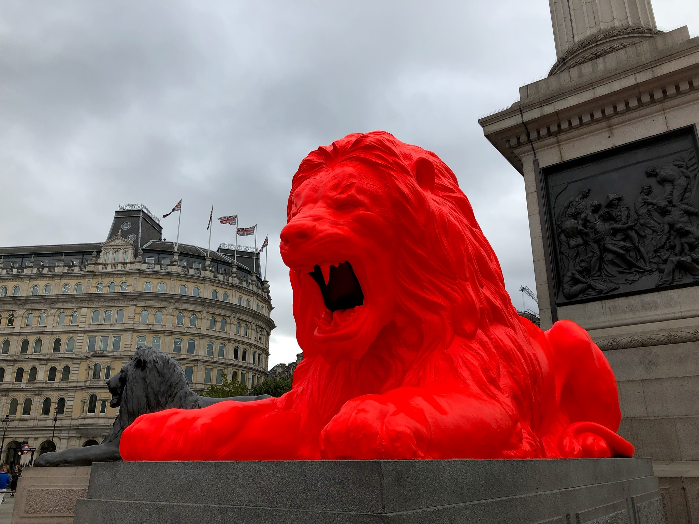
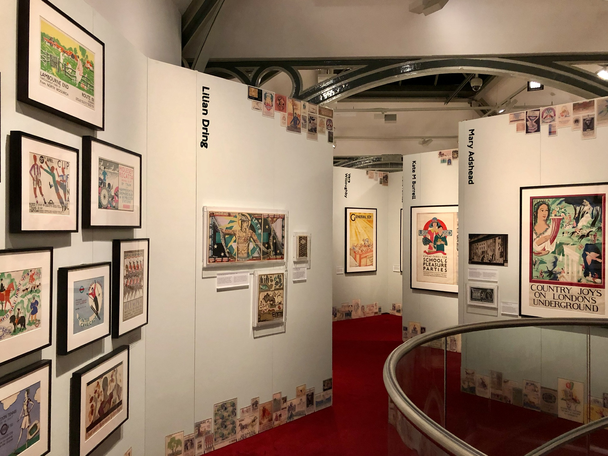

by Amy Parker and Dan Perrera
2018 was truly a roller coaster of a year. What started out as one of the slowest quarters in Fore Design history quickly turned into an all-out sprint for the rest of the year.
At the end of Q1, Dan made a new friend through Soloish, a Slack channel for freelancers and (very) small businesses. Aforementioned friend was looking for some friendly designers to partner with on a few projects so, after branding his own company, he connected us with a handful of clients in the start-up space. Working together was such a great experience that he approached us to get his own product off the ground.
We have both wanted to work on a single project for a longer period of time than our typical consulting projects allows for so we enthusiastically leapt at the opportunity to launch and grow a product.
In July, we stopped taking on new clients through Fore Design and joined Quala as Head of Design (Amy) and Head of Experience (Dan). We’ve been working to carefully craft an exciting new data intelligence platform starting with the customer-facing app. If you’re interested in learning more about what we’re working on, drop us a line and we’ll keep you updated.
This fall, we took our first legitimate vacation in recent memory, timing our trip to coincide with the London Design Festival and Design Biennale.
Festival events were scattered throughout the city so we frequently ran into sculptures, installations, performances, and pop-ups, like this neon lion in Trafalgar Square.

At Somerset House, host of the Biennale, pavilions from different countries as well as installations by a few individual artists interpreted the theme of “Emotional States.” Our hands-down favorite piece was Es Devlin’s giant egg-shaped relief of the city overlaid with warped home videos that expertly interacted with the map.
Aside from eating pizza for a solid third of the trip, another major highlight was the Poster Girls exhibit at the Transport Museum, a massive collection of works designed by female employees and contractors of Transport for London since 1920.

Since we were no longer working so collaboratively on client projects — Dan’s now handing front-end engineering and product management, I’m focused on design and user experience — our tiny shared office would no longer cut it. We love working at home so we knew we didn’t want to explore office space or co-working situations so we had to figure out a way to make our space work for our new needs.
The solution turned out to be dividing up our living area to make room for a desk for Dan while Amy kept the entire office for herself. This forced us to reconsider the other choices we’d made in our space and realized we should apply as much design consideration to our living space (especially since we spend 100% of our time there) as we do to our work. While we’ve still got a bit more work ahead of us, we’re significantly enjoying both our living and working space much more now that they really work how we need them to.
Since this year marked a major shift in our work life, we wanted to thank all of our friends, colleagues, and clients who’ve supported us over the last four years.